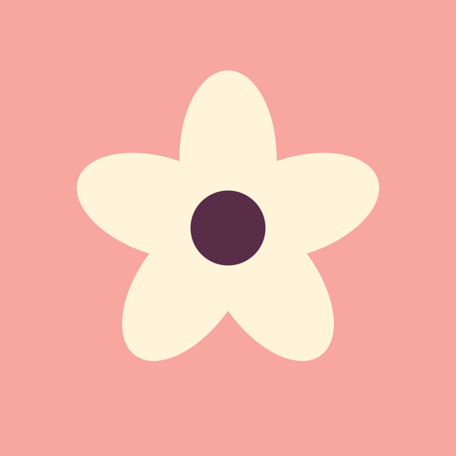
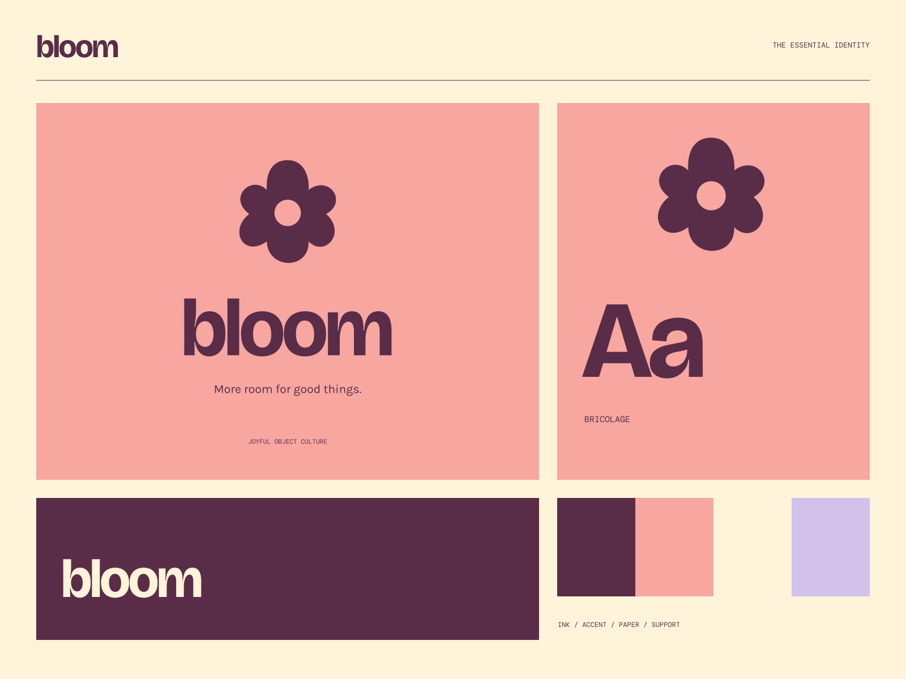

01
A brighter everyday
Objects that make the ordinary moments feel a little less ordinary.
EVERYDAY OBJECTS / EXTRAORDINARY FEELING
More room for good things. Small objects. Big good energy.

A coherent little world
Small objects. Big good energy. More room for good things.
01
Objects that make the ordinary moments feel a little less ordinary.
02
Good form, useful function, and personality that lasts.
03
A collection to mix, match, and make part of your world.

The point of view
Oversized sculpted petals, candy-colored packaging, and friendly heavy lettering. Playfulness appears in a few big gestures, balanced by very readable details.